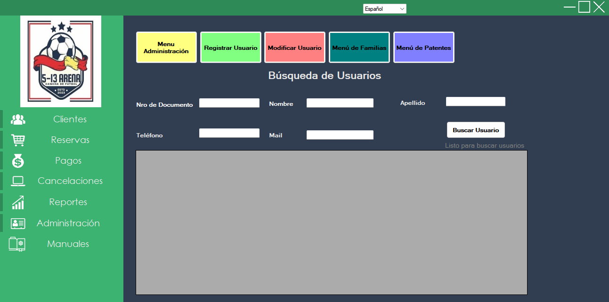
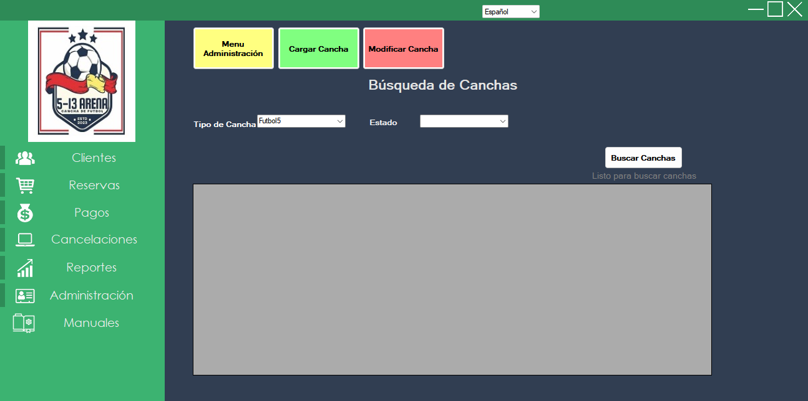
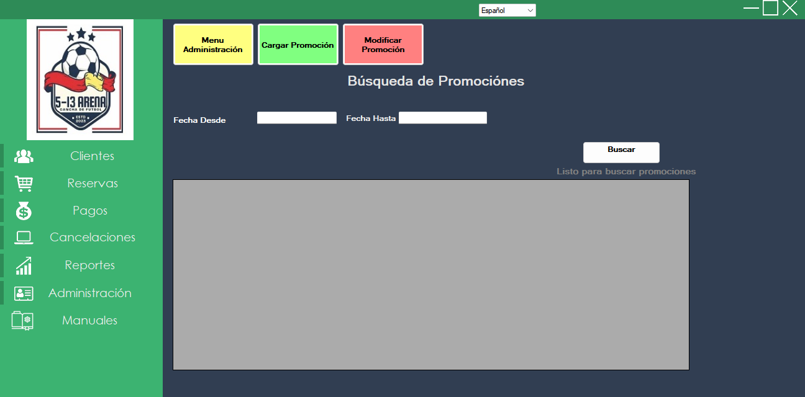

En este módulo se administran parámetros estructurales del sistema.
Permite buscar usuarios por Documento, Nombre, Apellido, Teléfono o Mail. Desde aquí se puede acceder a:

Permite administrar el catálogo de canchas (tipo, estado, características y costos). Utilice Cargar Cancha para altas y Modificar Cancha para cambios.

Permite crear y editar promociones con períodos de vigencia y estado. Es posible filtrarlas por rango de fechas y estado.

Desde este menú todos los usuarios pueden descargar la documentación disponible: